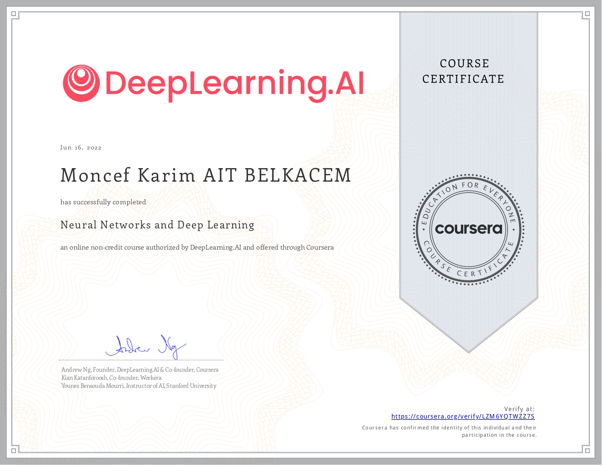

Hi, I'm Moncef
an aspiring data scientist
This Portfolio is currently undergoing maintenance
To see the older version, visit
https://mk8bk-archive.vercel.app/
Projects
Deep_Learning_ISD
This Project was one of my most enriching data science endeavours.
It is a custom made Neural Network trained on an extended MNIST dataset (Hexadecimal characters).
Using only numpy and standard python, I was able to achieve a mean accuracy of 93% over the whole dataset (38400 images, 16 classes).
The most interesting part (and most challenging) was the mathematical foundations of such a classifier.
Through Latex, I tried to convey the structure and theory as rigourously as a freshman math major could.
I submitted the notebook to my professors as part of an Introductory course to Data Science.
The Project was graded a 23/25, with an observation of "Excellent Work".
The class average was 13.5/25.
View the project on GitHub View the project on nbviewer
musi-math
This project was one of my first.
The idea is to use standard mathematical functions (polynomials, sin, cos) to produce melodies.
First we choose a certain combination and/or composition of standard functions; named f(x).
We then graph it to see wether or not it would be interesting to hear.
We select a musical scale (ex: D minor Pentatonic).
A discretization process is then applied; we round the outputs of f(x) to the nearest note on the selected scale.
Using the pyaudio module, this project is able to produce beautiful melodies, imagination is the limit.
The following links point to the repository and notebook respectively.
To hear the melodies outright, click on the nbviewer link,
then scroll down past the explanations and software construction to the 7-Playing a scale heading.
Multiple graphs and audio files are displayed, ranging from the simple sine() function to fairly complex, fourier-like patterns.
View the project on GitHub View the project on nbviewer
A Journey through Self Study
Current Readings And Online Courses
I am taking IBM's Data Science Certification to acquire a solid foundation in Data Science theory, methods and standards.
See course page
I completed the first course
See credential here
I am going through Terrence Tao's Analysis II book to prepare myself for further studies in functional analysis and approximation theory.
I am going through Sheldon Axler's Linear Algebra Done Right to acquire a solid foundation in linear algebra. It is a mandatory topic to master since so many data science algorithms rely heavily on Linear Algebra.
I am reading this book mainly to complement other online courses on data science algorithms. I will be picking up one of the following books next:
- An Introduction to Statistical Learning - Gareth James, Daniela Witten, Trevor Hastie, Robert Tibshirani
- Elements of Statistical Learning - Jerome H. Friedman, Robert Tibshirani, and Trevor Hastie
- Deep Learning - Aaron Courville, Ian Goodfellow, and Yoshua Bengio
I am reading this book to acquire basic multivariable calculus skills such as partial derivatives, Lagrange Multipliers , Gradients, Jacobian Matrices and multiple integration. Most of these topics are a must have to really understand DeepLearning architectures, which are basically Multivariable approximators similar to Newton's Method applied to \(n\) variable
Readings L1
I went through most of the exercises of this book during my second semester at university.
I took this course during my second semester to understand the structure of a simple, feedforward Neural Network. See credential online
This book was my first ever contact with AI in general. It was a great read. No Scikit-Learn, no Tensorflow. Just Multivariable Calculus, Linear Algebra and Numpy.
I read this book (completing most of the exercises) to prepare myself for university. Algebra, logarithmic manipulations, trigonometry, probability, sequences and matrices are all tools that every high school student has to master.
Coursera Python Specializations
I took this specialization to improve my python skills. I managed to complete it in little more than 10 days. See credential online
A strong foundation in python, lots of applications and a very enjoyable set of courses. This is one of the best introduction to computer science for complete beginners. See credential online

University Curriculum
Double major in Math and Computer Science at University Paris-Saclay
Courses Taken: Second Year (L2)
Semester Three
- Numerical Series
- Sequences and Series of Functions
- Power Series
- Parametrized Integrals
- Double Integrals
- Arithmetic in \(\mathbb{Z}/n\mathbb{Z}\)
- Abstract Groups
- Symmetric Groups
- Rings and Fields
- Polynomials in a field
- Polynomial roots
- Rational Fractions
- Sets and Basic Combinatorics
- Probability Spaces
- Random Variables
- Countable Probabilty Spaces
- Markov inequality, Variance and Law of Large Numbers
- Introductory Statistics
- Algorithms: Definitions and complexity
- Stack model and recursive functions
- Pointers - Linked Lists
- Trees
- Sorting algorithms
- Basic OCaml syntax
- Functional Programming Paradigm
- Persistent data structures in OCaml
- Recursive programming
- Encoding and Transmission
- Error Correction
- Data Links
- Local Networks
- IP Protocol
- Transport Protocols
- Routing
Courses Taken: First Year (L1)
Grades
I got an average grade of 15.19/20 in computer science
and 17.56/20 in mathematics.
You can view my L1 grade-book Here
Semester Two
- Bijections and inverse functions
- Integration
- Taylor series
- Approximation of functions by Taylor series
- Linear Differential Equations
- Linear Systems
- Vector Spaces
- Matrices
- Linear Maps
- Memory architecture
- Error types and compilation
- Stack
- Adresses and Pointers
- Linked lists
- Recursive Functions: GCD, MergeSort and QuickSort
- C++ structs
- C++ operator overloading
- C++ tests infrastructure (doctest)
- C++ objects and classes
- C++ Multiple compilation, makefiles
- Introduction to software engineering: modularity, encapsulation.
- Python data collections
- Python documentation - scientific formatting
- Python functions - Geometry
- Numpy - Gaussian Elimination and Linear Algebra
- Matplotlib - Numerical solutions of Differential Equations
- Numerical Integration
- Object Oriented Programming with python - Polynomials/Rational Functions
- Basic Statistical quantities
- Visualisation and descriptive statistics
- Data science pipeline and standard pratices
- Feature extraction
- Classifiers: Linear Regression, knn, tree based methods
- Image Processing
- Bias, error rate
- Percepton
- Introduction to deep neural networks
- Final: project
Semester One
- Real numbers, field axioms, properties of the real line
- Real functions review
- Functional limits
- Sequences
- Continuity
- differentiability
- Axiomatic construction of the real numbers
- Logic and Proofs
- Set theory
- equivalence relations
- Arithmetic and congruences
- Polynomials
- Complex numbers
- Basic Bash Commands
- Unix Operating system, file permissions.
- Introduction to computer networks
- Python data types
- Python control flow and loops
- General Web concepts, HTML-CSS
- Python functions
- Python files and IO
- C++ data types
- C++ loops and control statements
- C++ functions
- C++ Arrays
- C++ structures and overflow safety
- C++ 2D arrays
- C++ Files
- C++ debugging, tests
- C++ modularity, compilation
- Final Project : Terminal based 2048 game.
Baccalaureat Exam
Final Grade: 17.83/20
Baccalaureat details: Math Physics-Chemistry Biology-Geology
You can view my Baccalaureat grade-book
Here
Similarly, you can view my IELTS test result (7.5~C1)
Here
MathEnJellaba Introductory Research Project
My first Introduction to Computer Science, and by extension to the scientific process, was during my 1st year of highschool.
I enrolled in a mathematics research project called MathEnDjellaba, organized by the University of Bab Ezzouar - Algiers.
Spanning a whole year, we had to develop a mini-research thesis, answering a problem given by the professors of the department of mathematics.
As group leader, I not only had to direct our mathematical endeavours, but also prepare for the final thesis defense.
We were awarded the first prize that day.
Contact
Email:
moncef.aitbelkacem@gmail.com